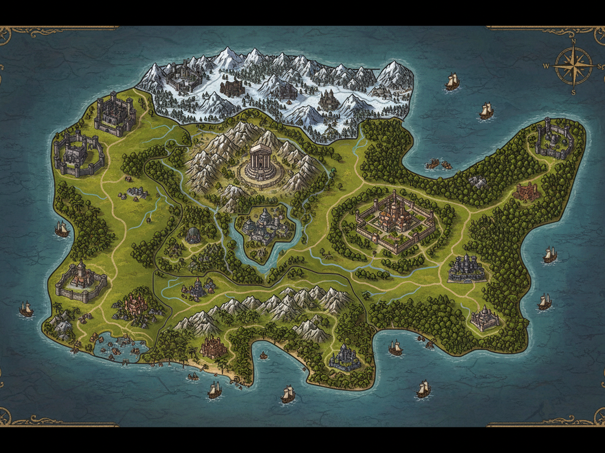

카이슨워드
수많은 왕국과 제국이 존재하는 정통 판타지의 대륙
카이슨워드 대륙 지도

현재 시대
주인공의 고향인 아르델 왕국은 541년 발하르 제국과의 전쟁에서 멸망하였다.
그러나 전쟁 중 목숨을 잃은 주인공은 알 수 없는 이유로 3년 전 과거인 578년으로 회귀한다.
현재 대륙은 겉으로는 평화를 유지하고 있지만,
발하르 제국은 새로운 전쟁을 준비하고 있다.
기사의 경지
워커
기초적인 오러의 감지
기초적인 오러의 감지
러너
오러를 형상화하는 단계
오러를 형상화하는 단계
마스터
자신만의 오러를 구축한 경지
자신만의 오러를 구축한 경지
마제스티
자신만의 세계를 구현하는 전설의 경지
자신만의 세계를 구현하는 전설의 경지